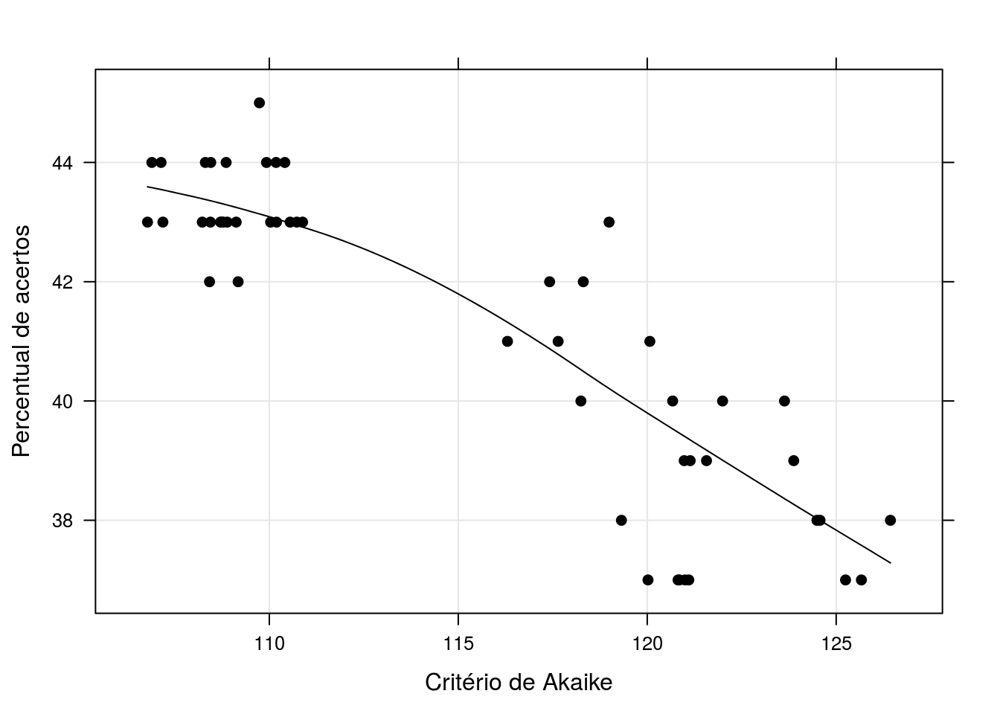

O algoritmo massive, implementado por [Daniel Ikenaga] como atividade proposta na disciplina ?? - Análise de Regressão Linear, tem por objetivo estudar o poder preditivo de modelos de regressão linear simples atráves da estimação massiva de possíveis modelos de regressão linear simples.
O algoritmo se baseia nas seguintes etapas, a partir de um conjunto de dados qualquer* (ver as considerações metodológicas):
Para uma ilustração do algoritmo utilizou-se o conjunto de dados, denominado wine. Este conjunto se refere a avaliação de vinhos brancos. Neste estudo foram observadas 10 características de cada vinho na qual pretende-se correlacionar com a qualidade do vinho, mensurada através de avaliadores que atribuíram notas de 1 a 9. Abaixo temos a estrutura R do conjunto.
## browseURL("paste0(https://gitlab.c3sl.ufpr.br/di12/massive/raw/",
## "master/data/wine.rda")
load("./data/wine.rda")
str(wine)## 'data.frame': 4898 obs. of 11 variables:
## $ fixed.acidity : num 7 6,3 8,1 7,2 7,2 8,1 6,2 7 6,3 8,1 ...
## $ volatile.acidity : num 0,27 0,3 0,28 0,23 0,23 0,28 0,32 0,27 0,3 0,22 ...
## $ citric.acid : num 0,36 0,34 0,4 0,32 0,32 0,4 0,16 0,36 0,34 0,43 ...
## $ residual.sugar : num 20,7 1,6 6,9 8,5 8,5 6,9 7 20,7 1,6 1,5 ...
## $ chlorides : num 0,045 0,049 0,05 0,058 0,058 0,05 0,045 0,045 0,049 0,044 ...
## $ free.sulfur.dioxide : num 45 14 30 47 47 30 30 45 14 28 ...
## $ total.sulfur.dioxide: num 170 132 97 186 186 97 136 170 132 129 ...
## $ pH : num 3 3,3 3,26 3,19 3,19 3,26 3,18 3 3,3 3,22 ...
## $ sulphates : num 0,45 0,49 0,44 0,4 0,4 0,44 0,47 0,45 0,49 0,45 ...
## $ alcohol : num 8,8 9,5 10,1 9,9 9,9 10,1 9,6 8,8 9,5 11 ...
## $ quality : int 6 6 6 6 6 6 6 6 6 6 ...Devido a grande quantidade de observações, 4898 ao todo, preferiu-se utilizar apenas 500 observações para aplicação do método. Além disso o número de modelos a serem estimados foi fixado em 50, não mais todos os modelos que podem ser estimados. Isso devido ao tempo computacional demasiadamente gasto para execução da função. Abaixo temos o carregamento da função e sua utilização neste (sub)conjunto de dados.
source("https://gitlab.c3sl.ufpr.br/di12/massive/raw/master/R/massive.R")
load("./data/wine.rda")
base <- wine[1:500, ]
test <- massive(base, seed = 20124689)
compara <- data.frame(aic = test$aic, acertos = test$pacertos)
str(compara)## 'data.frame': 50 obs. of 2 variables:
## $ aic : num 107 126 107 121 107 ...
## $ acertos: num 44 38 43 39 43 37 44 37 43 38 ...A implementação do algoritmo também calcula o valor de AIC para posterior comparação com o percentual de acertos proposto no algoritmo. Abaixo verificamos a relação destas duas medidas de qualidade do modelo onde uma leva em consideração a verossimilhança e o número de parâmetros do modelo e a outra somente o poder preditivo sem se importar com o modelo subjacente.
library(lattice)
xyplot(acertos ~ aic,
ylab = "Percentual de acertos",
xlab = "Critério de Akaike",
type = c("p", "smooth"),
grid = TRUE,
pch = 19,
data = compara)
coefsAic <- test$coef[which.max(compara$acertos)][[1]]
coefsMassive <- test$coef[which.max(compara$acertos)][[1]]Neste gráfico o padrão esperado deveria ser uma relação linear inversamente proporcional, ou seja, quanto menor o AIC maior o percentual de acertos. Porém não é, exatamente, o observado na figura. Notamos que há uma correlação negativa entre as medidas mas há também, uma variabilidade muito grande ocasionando discordância na escolha de modelos pelas duas alternativas. Dentre os 50 modelos estimados o melhor modelo sugerido pelo AIC é o que contém as variáveis (Intercept), chlorides, total.sulfur.dioxide, pH, sulphates, alcohol e o modelo sugerido pelo percentual de acertos contém (Intercept), chlorides, total.sulfur.dioxide, pH, sulphates, alcohol.
cat(format(Sys.time(),
format = "Atualizado em %d de %B de %Y.\n\n"))## Atualizado em 12 de agosto de 2016.sessionInfo()## R version 3.3.1 (2016-06-21)
## Platform: x86_64-pc-linux-gnu (64-bit)
## Running under: Ubuntu 14.04.5 LTS
##
## locale:
## [1] LC_CTYPE=en_US.UTF-8 LC_NUMERIC=C
## [3] LC_TIME=pt_BR.UTF-8 LC_COLLATE=en_US.UTF-8
## [5] LC_MONETARY=pt_BR.UTF-8 LC_MESSAGES=en_US.UTF-8
## [7] LC_PAPER=pt_BR.UTF-8 LC_NAME=C
## [9] LC_ADDRESS=C LC_TELEPHONE=C
## [11] LC_MEASUREMENT=pt_BR.UTF-8 LC_IDENTIFICATION=C
##
## attached base packages:
## [1] stats graphics grDevices utils datasets methods base
##
## other attached packages:
## [1] xtable_1.8-2 knitr_1.13 latticeExtra_0.6-28
## [4] RColorBrewer_1.1-2 lattice_0.20-33
##
## loaded via a namespace (and not attached):
## [1] Rcpp_0.12.6 magrittr_1.5 MASS_7.3-45
## [4] splines_3.3.1 nnls_1.4 quadprog_1.5-5
## [7] multcomp_1.4-5 stringr_1.0.0 tools_3.3.1
## [10] stabs_0.5-1 parallel_3.3.1 grid_3.3.1
## [13] TH.data_1.0-7 modeltools_0.2-21 htmltools_0.3.5
## [16] yaml_2.1.13 survival_2.39-4 mboost_2.6-0
## [19] digest_0.6.10 Matrix_1.2-6 party_1.0-25
## [22] formatR_1.4 codetools_0.2-14 strucchange_1.5-1
## [25] evaluate_0.9 rmarkdown_1.0 coin_1.1-2
## [28] sandwich_2.3-4 stringi_1.1.1 compiler_3.3.1
## [31] stats4_3.3.1 mvtnorm_1.0-5 zoo_1.7-13